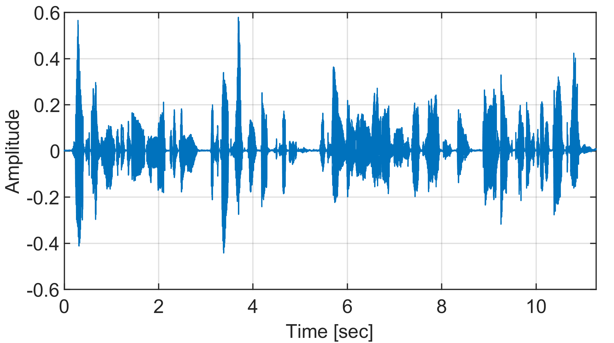
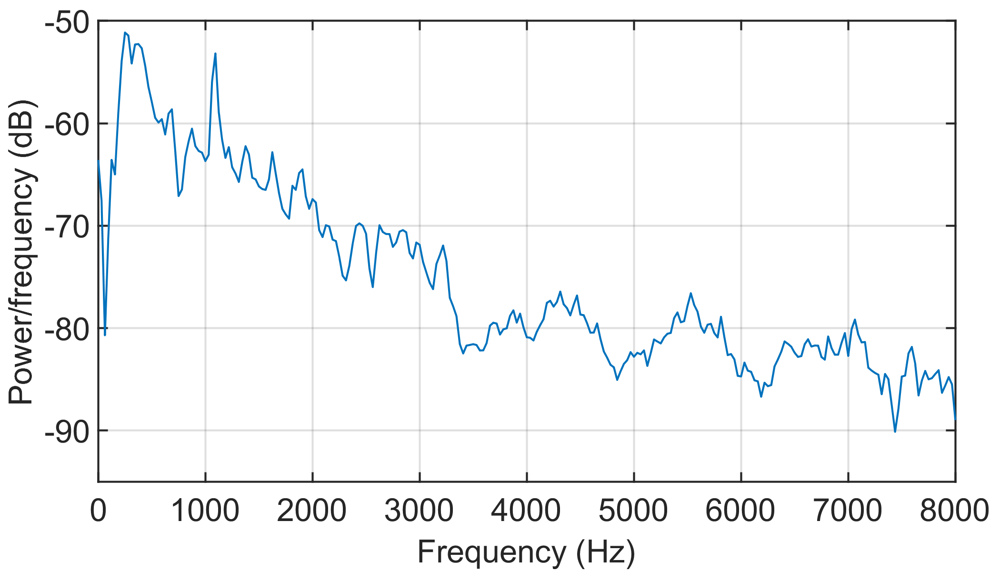

Section I: SZC with Simulated RIRs, SICER Corrected & Tested using Simulated RIRs

Fig.1. Top view of the room setup. BZCP: BZ Control Points, DZCP: DZ Control Points, LA: \(16\) Loudspeaker Array, VS: Virtual Source (the \(8^{\textrm{th}}\) loudspeaker in LA). \(RT_{60} = 300\)ms
Input = Speech Signal

Input Speech Signal: Time Domain

Input Speech Signal: Power Spectral Density